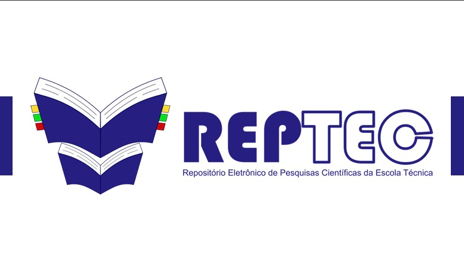
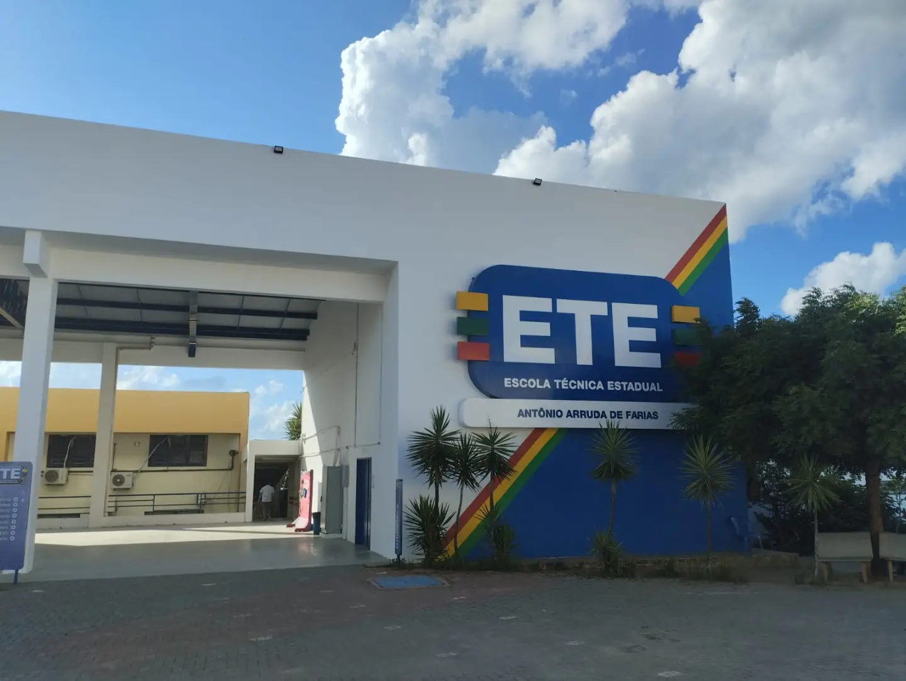

Descubra estudos inovadores produzidos por nossos alunos que contribuem para diversas áreas científicas. Mantenha-se informado sobre tendências atuais, avanços e insights acadêmicos diretamente da comunidade acadêmica da Escola Técnica Estadual Antônio Arruda de Farias.
Acesso ao Repositório